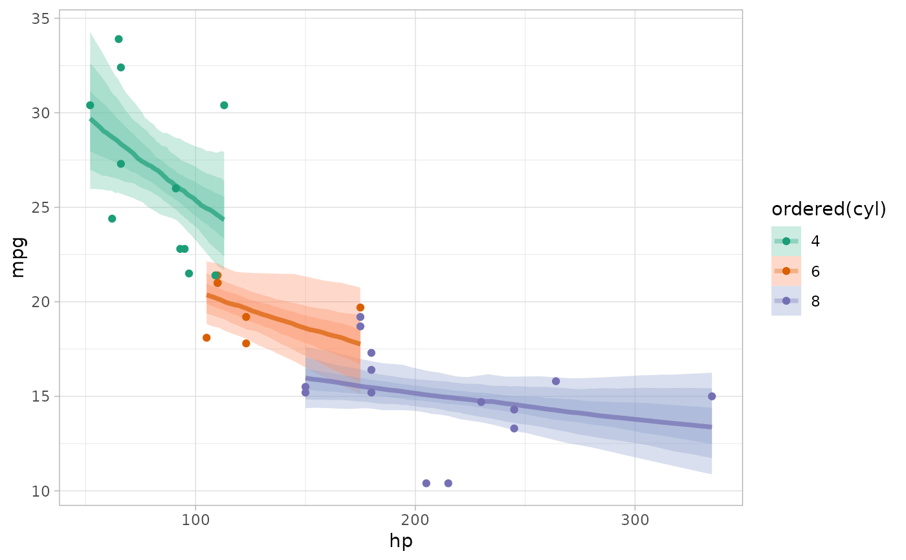
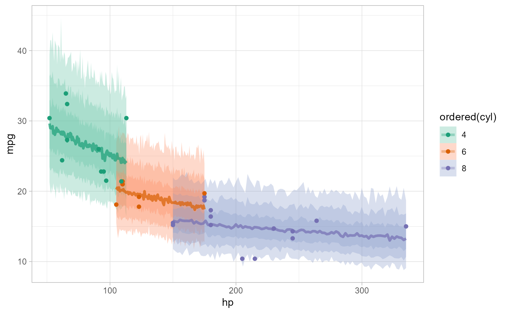

rvars for the linear predictor, posterior expectation, posterior predictive, or residuals of a model to a data frameR/epred_rvars.R, R/linpred_rvars.R, R/predicted_rvars.R
add_predicted_rvars.RdGiven a data frame and a model, adds rvars of draws from the linear/link-level predictor,
the expectation of the posterior predictive, or the posterior predictive to
the data frame.
add_epred_rvars( newdata, object, ..., value = ".epred", ndraws = NULL, seed = NULL, re_formula = NULL, dpar = NULL, columns_to = NULL ) epred_rvars( object, newdata, ..., value = ".epred", ndraws = NULL, seed = NULL, re_formula = NULL, dpar = NULL, columns_to = NULL ) # S3 method for default epred_rvars( object, newdata, ..., value = ".epred", seed = NULL, dpar = NULL, columns_to = NULL ) # S3 method for stanreg epred_rvars( object, newdata, ..., value = ".epred", ndraws = NULL, seed = NULL, re_formula = NULL, dpar = NULL, columns_to = NULL ) # S3 method for brmsfit epred_rvars( object, newdata, ..., value = ".epred", ndraws = NULL, seed = NULL, re_formula = NULL, dpar = NULL, columns_to = NULL ) add_linpred_rvars( newdata, object, ..., value = ".linpred", ndraws = NULL, seed = NULL, re_formula = NULL, dpar = NULL, columns_to = NULL ) linpred_rvars( object, newdata, ..., value = ".linpred", ndraws = NULL, seed = NULL, re_formula = NULL, dpar = NULL, columns_to = NULL ) # S3 method for default linpred_rvars( object, newdata, ..., value = ".linpred", seed = NULL, dpar = NULL, columns_to = NULL ) # S3 method for stanreg linpred_rvars( object, newdata, ..., value = ".linpred", ndraws = NULL, seed = NULL, re_formula = NULL, dpar = NULL, columns_to = NULL ) # S3 method for brmsfit linpred_rvars( object, newdata, ..., value = ".linpred", ndraws = NULL, seed = NULL, re_formula = NULL, dpar = NULL, columns_to = NULL ) add_predicted_rvars( newdata, object, ..., value = ".prediction", ndraws = NULL, seed = NULL, re_formula = NULL, columns_to = NULL ) predicted_rvars( object, newdata, ..., value = ".prediction", ndraws = NULL, seed = NULL, re_formula = NULL, columns_to = NULL ) # S3 method for default predicted_rvars( object, newdata, ..., value = ".prediction", seed = NULL, columns_to = NULL ) # S3 method for stanreg predicted_rvars( object, newdata, ..., value = ".prediction", ndraws = NULL, seed = NULL, re_formula = NULL, columns_to = NULL ) # S3 method for brmsfit predicted_rvars( object, newdata, ..., value = ".prediction", ndraws = NULL, seed = NULL, re_formula = NULL, columns_to = NULL )
| newdata | Data frame to generate predictions from. |
|---|---|
| object | A supported Bayesian model fit that can provide fits and predictions. Supported models
are listed in the second section of tidybayes-models: Models Supporting Prediction. While other
functions in this package (like |
| ... | Additional arguments passed to the underlying prediction method for the type of model given. |
| value | The name of the output column:
|
| ndraws | The number of draws to return, or |
| seed | A seed to use when subsampling draws (i.e. when |
| re_formula | formula containing group-level effects to be considered in the prediction.
If |
| dpar | For |
| columns_to | For some models, such as ordinal, multinomial, and multivariate models (notably, |
A data frame (actually, a tibble) equal to the input newdata with
additional columns added containing rvars representing the requested predictions or fits.
add_epred_rvars() adds rvars containing draws from the expectation
of the posterior predictive distribution to the data.
It corresponds to rstanarm::posterior_epred() or brms::posterior_epred().
add_predicted_rvars() adds rvars containing draws from the
posterior predictive distribution to the data.
It corresponds to rstanarm::posterior_predict() or brms::posterior_predict().
add_linpred_rvars() adds rvars containing draws from the (possibly
transformed) posterior linear predictors (or "link-level" predictors) to the data.
It corresponds to rstanarm::posterior_linpred() or brms::posterior_linpred().
The corresponding functions without add_ as a prefix are alternate spellings
with the opposite order of the first two arguments: e.g. add_predicted_rvars()
and predicted_rvars(). This facilitates use in data
processing pipelines that start either with a data frame or a model.
Given equal choice between the two, the spellings prefixed with add_
are preferred.
add_predicted_draws() for the analogous functions that use a long-data-frame-of-draws
format instead of a data-frame-of-rvars format. See spread_rvars() for manipulating posteriors directly.
Matthew Kay
#>#> #>#> #> #>#> #> #>if ( require("brms", quietly = TRUE) && require("modelr", quietly = TRUE) ) { theme_set(theme_light()) m_mpg = brm(mpg ~ hp * cyl, data = mtcars, family = lognormal(), # 1 chain / few iterations just so example runs quickly # do not use in practice chains = 1, iter = 500) # Look at mean predictions for some cars (epred) and compare to # the exponeniated mu parameter of the lognormal distribution (linpred). # Notice how they are NOT the same. This is because exp(mu) for a # lognormal distribution is equal to its median, not its mean. mtcars %>% select(hp, cyl, mpg) %>% add_epred_rvars(m_mpg) %>% add_linpred_rvars(m_mpg, value = "mu") %>% mutate(expmu = exp(mu), .epred - expmu) %>% print() # plot intervals around conditional means (epred_rvars) print(mtcars %>% group_by(cyl) %>% data_grid(hp = seq_range(hp, n = 101)) %>% add_epred_rvars(m_mpg) %>% ggplot(aes(x = hp, color = ordered(cyl), fill = ordered(cyl))) + stat_dist_lineribbon(aes(dist = .epred), .width = c(.95, .8, .5), alpha = 1/3) + geom_point(aes(y = mpg), data = mtcars) + scale_color_brewer(palette = "Dark2") + scale_fill_brewer(palette = "Set2") ) # plot posterior predictive intervals (predicted_rvars) print(mtcars %>% group_by(cyl) %>% data_grid(hp = seq_range(hp, n = 101)) %>% add_predicted_rvars(m_mpg) %>% ggplot(aes(x = hp, color = ordered(cyl), fill = ordered(cyl))) + stat_dist_lineribbon(aes(dist = .prediction), .width = c(.95, .8, .5), alpha = 1/3) + geom_point(aes(y = mpg), data = mtcars) + scale_color_brewer(palette = "Dark2") + scale_fill_brewer(palette = "Set2") ) }#>#>#> #> SAMPLING FOR MODEL 'anon_model' NOW (CHAIN 1). #> Chain 1: #> Chain 1: Gradient evaluation took 1.9e-05 seconds #> Chain 1: 1000 transitions using 10 leapfrog steps per transition would take 0.19 seconds. #> Chain 1: Adjust your expectations accordingly! #> Chain 1: #> Chain 1: #> Chain 1: Iteration: 1 / 500 [ 0%] (Warmup) #> Chain 1: Iteration: 50 / 500 [ 10%] (Warmup) #> Chain 1: Iteration: 100 / 500 [ 20%] (Warmup) #> Chain 1: Iteration: 150 / 500 [ 30%] (Warmup) #> Chain 1: Iteration: 200 / 500 [ 40%] (Warmup) #> Chain 1: Iteration: 250 / 500 [ 50%] (Warmup) #> Chain 1: Iteration: 251 / 500 [ 50%] (Sampling) #> Chain 1: Iteration: 300 / 500 [ 60%] (Sampling) #> Chain 1: Iteration: 350 / 500 [ 70%] (Sampling) #> Chain 1: Iteration: 400 / 500 [ 80%] (Sampling) #> Chain 1: Iteration: 450 / 500 [ 90%] (Sampling) #> Chain 1: Iteration: 500 / 500 [100%] (Sampling) #> Chain 1: #> Chain 1: Elapsed Time: 0.286 seconds (Warm-up) #> Chain 1: 0.086 seconds (Sampling) #> Chain 1: 0.372 seconds (Total) #> Chain 1:#> Warning: Bulk Effective Samples Size (ESS) is too low, indicating posterior means and medians may be unreliable. #> Running the chains for more iterations may help. See #> https://mc-stan.org/misc/warnings.html#bulk-ess#> Warning: Tail Effective Samples Size (ESS) is too low, indicating posterior variances and tail quantiles may be unreliable. #> Running the chains for more iterations may help. See #> https://mc-stan.org/misc/warnings.html#tail-ess#> # A tibble: 32 x 7 #> hp cyl mpg .epred mu expmu `.epred - expmu` #> <dbl> <dbl> <dbl> <rvar> <rvar> <rvar> <rvar> #> 1 110 6 21 20 ± 0.89 3.0 ± 0.044 20 ± 0.87 0.26 ± 0.074 #> 2 110 6 21 20 ± 0.89 3.0 ± 0.044 20 ± 0.87 0.26 ± 0.074 #> 3 93 4 22.8 26 ± 1.21 3.2 ± 0.047 26 ± 1.20 0.33 ± 0.093 #> 4 110 6 21.4 20 ± 0.89 3.0 ± 0.044 20 ± 0.87 0.26 ± 0.074 #> 5 175 8 18.7 16 ± 0.76 2.7 ± 0.048 15 ± 0.74 0.20 ± 0.059 #> 6 105 6 18.1 20 ± 0.91 3.0 ± 0.044 20 ± 0.89 0.26 ± 0.075 #> 7 245 8 14.3 15 ± 0.77 2.7 ± 0.052 14 ± 0.75 0.19 ± 0.054 #> 8 62 4 24.4 29 ± 2.00 3.3 ± 0.068 28 ± 1.96 0.37 ± 0.108 #> 9 95 4 22.8 26 ± 1.23 3.2 ± 0.048 25 ± 1.21 0.33 ± 0.092 #> 10 123 6 19.2 20 ± 0.91 3.0 ± 0.046 19 ± 0.90 0.25 ± 0.072 #> # ... with 22 more rows# }